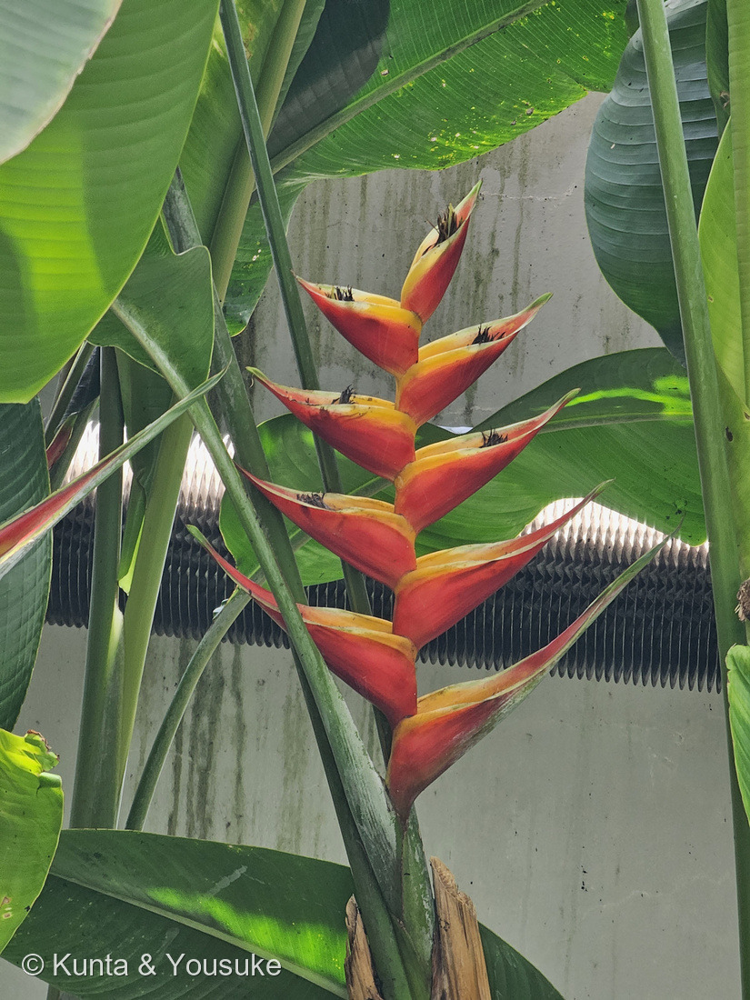
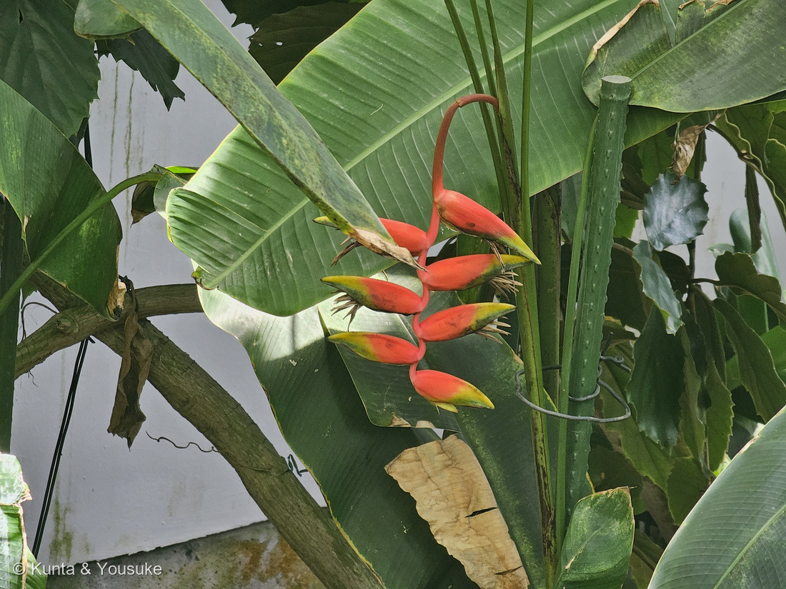
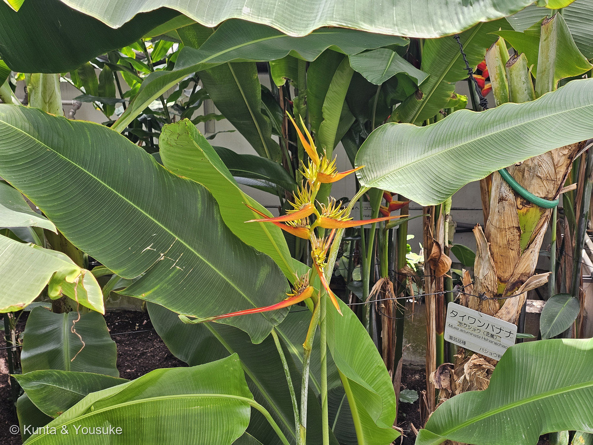
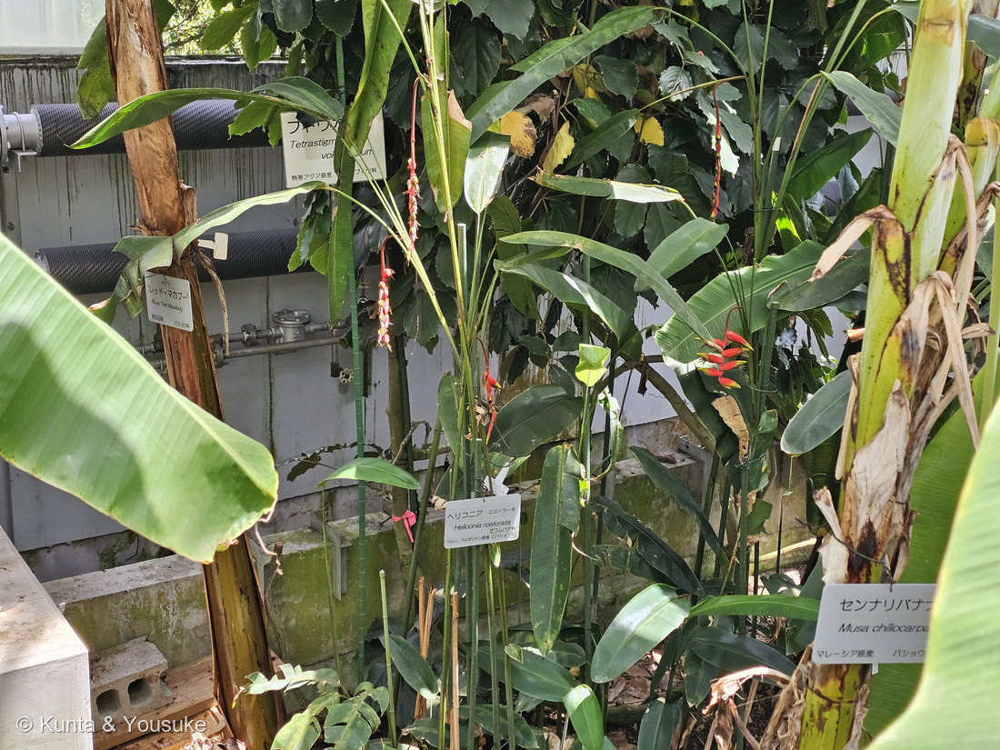
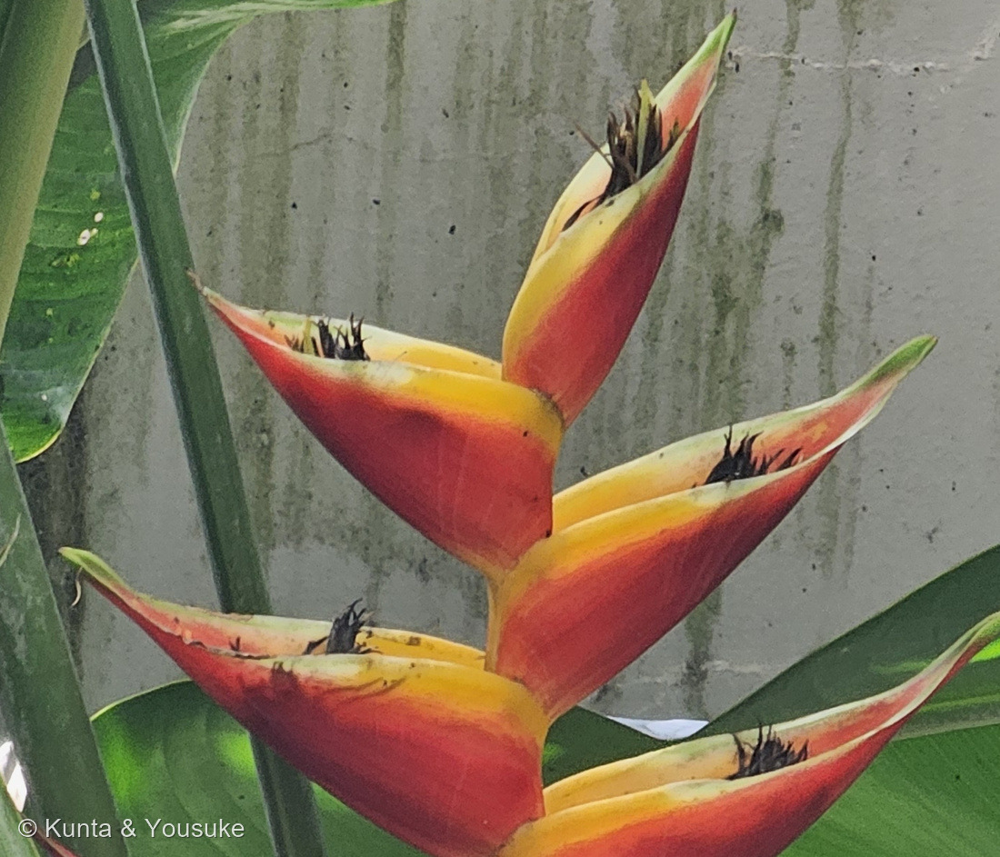

地図を読み込んでいるよ…
🔍 写真も地図も、押しているあいだ拡大して見られるよ（スマホは指を置いてすこし待ってね）。
🌍 の地図＝この子がもともと自生している場所を緑に。熱帯アメリカが中心。西太平洋のいくつかの島とインドネシアのマルク諸島にも数種。くわしくは下の地図の説明を見てね。
⭐熱帯アメリカの花だよ。日本語版Wikipediaは「熱帯アメリカ原産」とし、英語版Wikipediaは「Most of the 194 known species are native to the tropical Americas」とする。⭐この緑は「中央アメリカ＋カリブ＋南アメリカの熱帯」をまとめて塗ったもの＝⚠属ぜんたいのおおよその範囲で、どれか1種のものではないよ。⚠⚠ぬれていない場所がある＝英語版Wikipediaは「a few are indigenous to certain islands of the western Pacific and Maluku in Indonesia」とも書く＝⭐西太平洋のいくつかの島と、インドネシアのマルク諸島にも数種いる。⭐でも「数種」なので、インドネシア全体を緑にすると広すぎると思って塗らなかった＝⭐ちがう読み方をしたので、正直に書いておくね。⭐⭐名札のあった2種でいうと＝ヘリコニア ラティスパタは「中央アメリカ原産」（園の名札）、ウナズキヘリコニアは「native to El Salvador, Peru, Bolivia, Colombia, Venezuela, Costa Rica, and Ecuador」（英語版Wikipedia）。⚠園の名札はウナズキヘリコニアを「ペルー、アルゼンチン原産」としていたけれど、ぼくが読めた出典にアルゼンチンは出てこなかった＝⭐だからアルゼンチンは塗っていない。⭐⭐⭐そして、この緑にはもうひとつの意味がある＝ここはハチドリのいる大陸なんだ。⭐英語版Wikipediaは、ショウガ目のハチドリ媒の仲間とハチドリの仲間が1800万年前からいっしょに枝分かれしてきた、と書く＝⚠だからこの地図は「花の場所」であると同時に、その相手がいる場所でもあるよ。⭐ボリビアは、この属のウナズキヘリコニアを国花にしている（カントゥータとならんで「パトゥフ」）。⚠ぼくらが会ったのは広島の大温室の株＝もちろんこの緑の外だよ。⭐⭐同じショウガ目の254 タビビトノキはマダガスカル、069 バナナは東南アジア＝⭐ショウガ目の子たちは、熱帯の各地にちらばっているね。
⚠ 地図は国（日本と中国だけ県・省）までしか塗れないから、ほんとうの分布より広く見えていることがあるよ。地図はだいたいの場所。正確なところは、上の文を見てね。
ヘリコニア（オウムバナ）
Heliconia spp.
英名 lobster-claws（ロブスターの爪）・toucan beak（オオハシのくちばし）・false bird-of-paradise（にせゴクラクチョウカ） ── ⭐名札のあった2種＝H. rostrata（ウナズキヘリコニア）と H. latispatha 原産 熱帯アメリカが中心
オウムバナ科 · Heliconiaceae（オウムバナ属 Heliconia・ショウガ目 Zingiberales）── ⭐⭐⭐⭐図鑑ではじめてのオウムバナ科＝103科目／⭐⭐4つめのショウガ目の科（069 バナナ・070 チユウキンレン／176 ミョウガ／254 タビビトノキ）／⭐⭐⭐1科1属＝この科はオウムバナ属だけでできているよ
燻太さんの観察「熱帯の植物の代表種、ジャングルの中でよく目立つけど、こんなに花の形が多彩だとは知らなかった。でも、共通している点は赤と黄色のツートンカラーが交互に突き出るところ。」── ⭐⭐⭐⭐⭐「交互に突き出る」はこの科をひとことで言い当てていて、「多彩」の答えはハチドリだった
⭐⭐⭐ 名前と学名の由来 ── ムーサの山からもらった名前
⭐⭐⭐⭐ この属の名前には、ちょっとすてきな仕掛けがあるんだ。
- ⭐⭐⭐属名 Heliconia は、カール・リンネが1771年につけた名前＝英語版Wikipediaは、古代ギリシャ語の「Ἑλικώνιος（Helikṓnios）」に由来し、それは中央ギリシャ・ボイオティア地方の「Mount Helicon（ヘリコン山）」にちなむ、と書く。
- ⭐⭐ヘリコン山は、ギリシャ神話でムーサ（ミューズ）たちが住む山。⭐「この植物の堂々たる姿は、その聖なる場所にふさわしいと考えられたのだろう」と説明されているよ。
- ⭐⭐⭐⭐そして、ここからが面白いところ。――この属は、もともとバショウ科（Musaceae）に入れられていた＝英語版Wikipedia「The genus was formerly included in the family Musaceae, which includes the bananas」。
- ⭐⭐⭐バショウ属の名前は Musa。――⭐⭐ムーサのとなりに、ムーサの住む山が置かれていた、ということになる。⚠「リンネがわざとそうした」と書いた出典を、ぼくは見つけられなかった。⭐だからこれは、ぼくがならべて見て「きれいだな」と思ったことだよ。
- ⭐1998年、APG体系でこの属はオウムバナ科として独立した＝しかも「a sister family to Musaceae」＝バショウ科の姉妹の科（同）。⭐別の科になっても、となりどうしのままなんだね。
⭐⭐⭐ そして和名も学名も、「くちばし」を見ている。
- ⭐⭐和名の「オウムバナ」は、苞の形から＝日本語版Wikipediaは、この科の苞を「緑、赤、黄色などの鮮やかな色の舟形、あるいはオウムのくちばし形の苞」と書く。
- ⭐⭐⭐そして、名札にあった種の種小名 rostrata は、ラテン語の rostrum（くちばし）から＝「くちばしのある」。
- ⭐⭐つまり、日本語の「オウムバナ」とラテン語の「rostrata」が、同じところを見ている。――⭐261 タカサゴユリで「和名も学名も台湾を指していた」と書いたけれど、あれと同じ形だね。
- ⭐その H. rostrata の和名はウナズキヘリコニア（頷き）＝⭐写真②のように、花序が弓なりにうなずくように垂れ下がるから。⭐英名は「hanging lobster claw」（ぶら下がるロブスターの爪）。
- ⭐⭐そして、この子はボリビアの国花だよ＝英語版Wikipedia「Along with the cantuta flower, Heliconia rostrata, known as patujú, is the national flower of Bolivia」。⭐現地では「パトゥフ（patujú）」と呼ばれている。
⭐⭐ この植物のこと ── 1科1属の、103科目
- ⭐⭐⭐オウムバナ科は、オウムバナ属だけでできている＝日本語版Wikipediaは「オウムバナ属（Heliconia）だけからなる1属約80種」とする。
- ⚠⚠でも、種の数は出典で割れている＝英語版Wikipediaは「Most of the 194 known species are native to the tropical Americas」＝194種とする。⭐80種と194種。⚠どちらが正しいかは、ぼくには決められなかった。
- ⭐分布＝「熱帯アメリカ原産」（日本語版Wikipedia）。⭐英語版は「a few are indigenous to certain islands of the western Pacific and Maluku in Indonesia」＝西太平洋の島とインドネシアのマルク諸島にも数種いると書き添えている。
- ⭐姿＝「大型の多年草で、偽茎を持つ」（同）。⭐偽茎＝069 バナナと同じで、幹に見えるものは葉鞘が重なったものだよ。
- ⭐⭐図鑑のショウガ目は、これで4つめの科＝バショウ科（069 バナナ・070 チユウキンレン）／ショウガ科（176 ミョウガ）／ゴクラクチョウカ科（254 タビビトノキ）。
- ⭐⭐そして、その254とは名前でもつながっている＝英名の「false bird-of-paradise」（にせゴクラクチョウカ）は、「ゴクラクチョウカ属（Strelitzia）の花にそっくりだから」（英語版Wikipedia）。
⭐⭐⭐⭐ 燻太さんの観察① ──「赤と黄が交互に突き出る」、あれは花じゃない
⭐⭐⭐ 燻太さんの言葉：「共通している点は赤と黄色のツートンカラーが交互に突き出るところ」。――⭐⭐これ、この科をひとことで言い当てていると思う。
- ⭐⭐⭐⭐まず、あの赤と黄は花ではなく苞（ほう）なんだ。――英語版Wikipediaはこう書く＝「consist of brightly colored, waxy bracts, with small true flowers peeping out from the bracts」＝⭐「鮮やかな色の、ろう質の苞からできていて、小さな本当の花が苞からのぞく」。
- ⭐⭐⭐写真⑤を見てほしいな。――⭐舟形の苞のふところに、黒っぽい小さなものが見えるでしょう。あれが本当の花だよ（⚠もう咲き終わったあとかもしれない）。
- ⭐⭐そして「交互に」というのが、まさにそのとおり＝苞は軸の左右に2列に、互いちがいにつく。⭐写真①⑤で、下から上へたどってみると、右・左・右・左…とならんでいるのが分かるよ。
- ⭐⭐⭐2つ前の260 シュロガヤツリを思い出してほしいな。――⭐あちらは「葉に見えるものが、じつは苞」だった。⭐⭐こちらは「花に見えるものが、じつは苞」。⭐同じ「苞」という部品が、ぜんぜんちがう化けかたをしているんだ。
- ⭐苞が「ろう質（waxy）」なのも大事＝⭐だから雨に濡れても色があせず、何週間ももつ。⭐切り花として世界じゅうに運ばれるのは、そのおかげだよ。
⭐⭐⭐⭐⭐ 燻太さんの観察② ──「花の形が多彩」の答えは、ハチドリだった
⭐⭐⭐ 燻太さんの言葉：「こんなに花の形が多彩だったとは知らなかった」。――⭐⭐⭐この「なぜ？」に、はっきりした答えがあったよ。
- ⭐⭐まず、この仲間は鳥に花粉を運んでもらう花（鳥媒花）＝とくにハチドリ。⭐英語版Wikipediaは「Heliconias are known to those who grow them as a host flower to many birds, especially hummingbirds」と書く。
- ⭐⭐⭐⭐そして、ここが答え＝「The concurrent diversification of hummingbird-pollinated taxa in the order Zingiberales and the hummingbird family (Trochilidae: Phaethorninae) starting 18 million years ago supports the idea that these radiations have influenced one another through evolutionary time.」
- ⭐⭐⭐つまり――ショウガ目のハチドリ媒の仲間と、ハチドリの仲間が、1800万年前からいっしょに枝分かれしてきた。⭐おたがいが、おたがいの多様さに影響しあった、ということ。
- ⭐⭐⭐⭐⭐さらに、その理由まで書いてある＝「Hermits tend to have long curved bills while non-hermits tend to possess short straight bills, a morphological difference that likely spurred the divergence of these groups in the Miocene era.」
- ⭐⭐⭐訳すと＝ハチドリの「ハーミット」の仲間は長く曲がったくちばし、そうでない仲間は短くまっすぐなくちばしを持ちがちで、その形のちがいが、中新世に両者の分岐をうながしたらしい。
- ⭐⭐⭐⭐だから、燻太さんが見た「花の形の多彩さ」は、ハチドリのくちばしの形の多彩さの裏返しだと考えられているんだ。⭐垂れ下がるもの（写真②）、まっすぐ立つもの（①）、横に開くもの（③）――どれも「どの鳥に来てほしいか」の形なのかもしれない。
- ⚠⚠ただし、正直に書いておくね＝⭐「この形にはこのハチドリが来る」という種ごとの対応までは、ぼくが読めた出典には書かれていなかった。⭐上の話は、仲間全体としての大きな流れだよ。
⭐⭐⭐ 「ジャングルの中でよく目立つ」── それは、鳥に見せているから
- ⭐⭐燻太さんの言葉：「熱帯の植物の代表種、ジャングルの中でよく目立つ」。――⭐その「目立つ」は、たぶんぼくらに向けられたものじゃない。
- ⭐緑ばかりの林の中で、赤はいちばん遠くからでも見つけやすい色。⭐⭐そして、その赤を見つけてほしい相手が、ハチドリなんだ。⚠これはぼくの読みで、そう書いた出典があるわけではないよ。
- ⭐⭐⭐⭐そして、苞にはもうひとつの役目がある――⭐水がたまるんだ。
- 英語版Wikipediaはこう書く＝「In bracts containing small amounts of water, fly larvae and beetles are the dominant inhabitants. In bracts with greater quantities of water the typical inhabitants are mosquito larva.」
- ⭐⭐⭐つまり――水の少ない苞にはハエの幼虫と甲虫が、水の多い苞にはカの幼虫が住む。⭐⭐苞は看板であると同時に、小さな池でもあるということ。
- ⭐巻いた葉の中にすむ虫もいて、ハムシ科の甲虫が葉の内側を食べる、とも書いてある。⭐⭐1本のヘリコニアが、それだけで小さな街になっているんだね。⏳宿題にしたよ。
⭐ 同定について ── 属で止めた回
⚠ このページは、種を決めていない。⭐020 フィロデンドロン・249 ビカクシダと同じ「属までのページ」だよ。
- ⭐⭐属（オウムバナ属）は、はっきりしている＝大型の多年草・偽茎・舟形（オウムのくちばし形）の鮮やかな苞が2列に交互につき、本当の花はその中（日本語版Wikipedia）＝⭐写真①⑤がそのとおり。
- ⚠種を決めなかった理由①＝名札があったのは2種だけ＝「ヘリコニア ロストラータ」と「ヘリコニア ラティスパタ」。
- ⚠⚠理由②＝写真の花序と、その名札を対応づけられなかった――⭐燻太さん自身が「近くによって撮影できない子も多くて、名札が撮影できなかった子も多かった」と言っている。⭐248 メタセコイアで覚えたとおり、近い時刻のコマを同じ株のものとして使うわけにはいかないんだ。
- ⚠理由③＝オウムバナ属は種数が多い（80種とも194種とも）。
- ⭐だから、いちばん確かなところで止めた。⏳名札と花序を1つずつ組にして撮ってきてもらえたら、種まで進めるよ。
⚠ そして、名札について気づいたことが2つ。
- ⚠①つづりが「Heliconia rostorata」になっていた。――⭐正しくは rostrata だと思う（英語版Wikipedia・日本語版Wikipediaとも rostrata）。⭐o がひとつ多いんだ。
- ⚠②「ペルー、アルゼンチン原産」とあったけれど、ぼくが読めた出典にアルゼンチンは出てこなかった＝英語版Wikipediaは「native to El Salvador, Peru, Bolivia, Colombia, Venezuela, Costa Rica, and Ecuador」、日本語版Wikipediaは「中南米（ペルー、エクアドル）」とする。
- ⭐⭐名札を責めるつもりはないよ。――⭐名札は、作られたころの知識でできているものだから（253 ビロウで書いたのと同じ）。⭐ただ、ぼくが確かめられなかったことは、書いておくね。
⭐ 会えた場所 ── 広島市植物公園の大温室
- ⭐2026年8月8日、広島市植物公園の大温室。⭐⭐249 ビカクシダ・250 キソウテンガイ・254 タビビトノキと同じ日だよ。
- ⭐⭐そして1分あまりのあいだに、3つのちがう形の花序が撮られている＝12:02:19（垂れ下がる）→12:03:13（横に開く）→12:03:26（まっすぐ立つ）。⭐燻太さんの「多彩」は、この1分に詰まっている。
- ⭐⭐⭐写真④がとてもいい＝バナナのなかまの大きな葉にかこまれた一角に、3つの形が同時に写っている。⭐まわりの名札は「センナリバナナ」「レッド・マカブー」――⭐どれもバショウ科。
- ⭐⭐⭐つまり、この子はかつて自分が入れられていた科の植物たちに、ぐるりと囲まれて立っていたことになる。⭐園の人がそう植えたのか、たまたまなのかは分からないけれど、ぼくはうれしくなったよ。
出典：広島市植物公園の園名札（「ヘリコニア ロストラータ／Heliconia rostorata／オウムバナ科／ペルー、アルゼンチン原産（バショウ科）」／「ヘリコニア ラティスパタ／Heliconia latispatha／中央アメリカ原産／オウムバナ科」。⚠名札のアップは公開していないよ／⚠つづりと原産については上の「同定について」に書いたとおり）／日本語版Wikipedia「オウムバナ科」（「オウムバナ属（Heliconia）だけからなる1属約80種」／ショウガ目に属すること／熱帯アメリカ原産／「大型の多年草で、偽茎を持つ」／「緑、赤、黄色などの鮮やかな色の舟形、あるいはオウムのくちばし形の苞をもつ」／花被片は6枚／「今でも古い資料を引用したものでは、バショウ科に分類していることもある」）／日本語版Wikipedia「ウナズキヘリコニア」（学名 Heliconia rostrata Ruiz et Pav.／和名ウナズキヘリコニア・英名 hanging lobster claw／偽茎は高さ2〜3m・原産地では最大6m／葉は長さ60〜120cm／「30 cmの花序がぶら下がる」／花苞は長さ10–12 cm、赤・黄・黄緑色からなるカニのハサミに似た形状で、本来の花は目立たない／花期は通年だが夏〜秋に多い／原産は中南米（ペルー、エクアドル））／英語版Wikipedia "Heliconia"（属名がリンネ（1771）により古代ギリシャ語 Ἑλικώνιος ＝ Mount Helicon にちなむこと・ヘリコン山はムーサたちが住む山であること／"Most of the 194 known species are native to the tropical Americas, but a few are indigenous to certain islands of the western Pacific and Maluku in Indonesia."／"consist of brightly colored, waxy bracts, with small true flowers peeping out from the bracts"／"The concurrent diversification of hummingbird-pollinated taxa in the order Zingiberales and the hummingbird family (Trochilidae: Phaethorninae) starting 18 million years ago supports the idea that these radiations have influenced one another through evolutionary time."／"Hermits tend to have long curved bills while non-hermits tend to possess short straight bills, a morphological difference that likely spurred the divergence of these groups in the Miocene era."／"In bracts containing small amounts of water, fly larvae and beetles are the dominant inhabitants. In bracts with greater quantities of water the typical inhabitants are mosquito larva."／ハムシ科の甲虫が巻いた葉の内側を食べること／英名 lobster-claws・toucan beak・wild plantain・false bird-of-paradise と、最後が Strelitzia に似ることに由来すること／"The genus was formerly included in the family Musaceae, which includes the bananas"／1998年に APG がオウムバナ科を認め、ショウガ目のなかでバショウ科の姉妹群としたこと）／英語版Wikipedia "Heliconia rostrata"（"native to El Salvador, Peru, Bolivia, Colombia, Venezuela, Costa Rica, and Ecuador, and naturalized in Puerto Rico"／"Along with the cantuta flower, Heliconia rostrata, known as patujú, is the national flower of Bolivia"／命名者 Ruiz & Pav.／"pendulous inflorescences with the bracts facing downwards"／"Heliconias are known to those who grow them as a host flower to many birds, especially hummingbirds"）